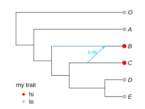
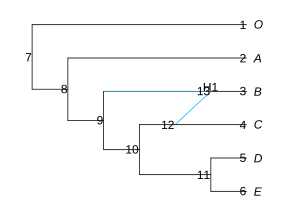

Discrete Trait Evolution
With a phylogenetic network structure inferred, we can now estimate how quickly traits have evolved over time using a likelihood model. These traits should be discrete characteristics of a species such as feather color, diet type, or DNA in aligned genetic sequences.
Discrete trait data
As with continuous trait evolution, we assume a fixed network, correctly rooted, with branch lengths proportional to calendar time. We start with a network, then add data about the tips of this network.
The simplest way is to use a vector of species names with a data frame of traits:
julia> # read in network
net = readTopology("(O:4,(A:3,((B:0.4)#H1:1.6::0.92,((C:0.4,#H1:0::0.08):0.6,(D:.2,E:.2):0.8):1):1):1);");
julia> # read in trait data
species = ["C","A","D","B","O","E"];
julia> dat = DataFrame(trait=["hi","lo","lo","hi","lo","lo"])
6×1 DataFrames.DataFrame
│ Row │ trait │
│ │ String │
├─────┼────────┤
│ 1 │ hi │
│ 2 │ lo │
│ 3 │ lo │
│ 4 │ hi │
│ 5 │ lo │
│ 6 │ lo │If your species names and trait data are in the same data frame, read in your data frame then subset the data like this:
dat = DataFrame(species=["C","A","D","B","O","E"], trait=["hi","lo","lo","hi","lo","lo"]);
species = dat.species # or: dat[!, :species]
select!(dat, Not(:species)) # select all columns except for :species; modifies dat in placeLet's plot the network and map the data onto it:
using RCall, PhyloPlots
R"par"(mar=[0,0,0,0]); # to reduce margins
res = plot(net, :R; tipOffset=0.3); # the results "res" provides point coordinates, to use for data annotation
o = [findfirst(isequal(tax), species) for tax in tipLabels(net)] # 5,2,4,1,3,6: order to match taxa from "species" to tip labels
isequal(species[o], tipLabels(net)) # true :)
traitcolor = map(x -> (x=="lo" ? "grey" : "red"), dat.trait[o])
R"points"(x=res[13].x .+0.1, y=res[13].y, pch=16, col=traitcolor, cex=1.5); # adds grey & red points
R"legend"(x=1, y=2, legend=["hi","lo"], pch=16, col=["red","grey"],
title="my trait", bty="n",var"title.adj"=0);
# next: add arrow to show gene flow edge, and proportion γ of genes affected
hi = findfirst([!e.isMajor for e in net.edge]) # 6 : "h"ybrid "i"ndex: index of gene flow edge (minor hybrid) in net
(hx1, hx2, hy1, hy2) = (res[i][hi] for i in 9:12); # coordinates for minor hybrid edge; 1=start, 2=end
R"arrows"(hx1, hy1, hx2, hy2, col="deepskyblue", length=0.08, angle=20); # adds the arrow
R"text"(res[14][hi,:x]-0.2, res[14][hi,:y]+0.1, res[14][hi,:gam], col="deepskyblue", cex=0.75); # add the γ value
Substitution models
After reading in your data, choose a model to describe how evolutionary changes (or substitutions, in the case of DNA) happened over time. Available Markov substitution models are described below.
For general trait types, use one of these three models:
:BTSMBinary Trait Substitution Model (2 states, rates unconstrained):ERSMEqual Rates Substitution Model (kstates, all transitions possible with equal rates):TBTSMTwo Binary Trait Substitution Model (though not fully implemented yet)
Inference
To infer evolutionary rates, run fitdiscrete on the network and data. It will calculate the maximum likelihood score of one or more discrete trait characters at the tips on a fixed network.
- Along each edge, evolutionary changes are modeled with a continous time Markov model.
- At a hybrid node, the trait is assumed to be inherited from one or the other of its parents (immediately before the reticulation event), with probabilities equal to the inheritance γ of each parent edge, which is given by the network.
- At the root of the network, a uniform distribution among the possible states is assumed a priori.
- The model ignores incomplete lineage sorting (e.g. hemiplasy).
parameter estimation & model fit
The example below if for a binary trait, first using a model assuming equal rates (from lo to hi and from hi to lo); then using a model allowing for distinct rates. The option optimizeQ=false causes transition rates to stay at their starting values, without being optimized.
julia> s1 = fitdiscrete(net, :ERSM, species, dat; optimizeQ=false)
PhyloNetworks.StatisticalSubstitutionModel:
Equal Rates Substitution Model with k=2,
all rates equal to α=0.07042.
rate matrix Q:
hi lo
hi * 0.0704
lo 0.0704 *
1 traits, 6 species
on a network with 1 reticulations
log-likelihood: -5.38599
julia> s2 = fitdiscrete(net, :BTSM, species, dat; optimizeQ=false)
PhyloNetworks.StatisticalSubstitutionModel:
Binary Trait Substitution Model:
rate hi→lo α=0.07042
rate lo→hi β=0.07042
1 traits, 6 species
on a network with 1 reticulations
log-likelihood: -5.38599The default rates, which act as starting value if rates were to be optimized, are chosen equal to the inverse of the total edge lengths in the network (or 1/ntax if all branch lengths are missing).
By default optimizeQ = true, such that fitdiscrete estimates the parameters of the rate matrix Q.
julia> s3 = fitdiscrete(net, :ERSM, species, dat)
PhyloNetworks.StatisticalSubstitutionModel:
Equal Rates Substitution Model with k=2,
all rates equal to α=0.70216.
rate matrix Q:
hi lo
hi * 0.7022
lo 0.7022 *
1 traits, 6 species
on a network with 1 reticulations
log-likelihood: -3.76738
julia> s4 = fitdiscrete(net, :BTSM, species, dat)
PhyloNetworks.StatisticalSubstitutionModel:
Binary Trait Substitution Model:
rate hi→lo α=0.96784
rate lo→hi β=0.55897
1 traits, 6 species
on a network with 1 reticulations
log-likelihood: -3.58702To compare the two models, we can use the Akaike criterion.
julia> using StatsBase
julia> aic(s3)
9.534758444273564
julia> aic(s4)
11.174046169804559Here, the equal-rate model is slightly favored (lower AIC), so we will use s3 below.
ancestral state prediction
This is traditionally called "ancestral state reconstruction", but we do not actually reconstruct anything. We make predictions for (past of present-day) values, hopefully with some measure to quantify our uncertainty.
julia> # show(ancestralStateReconstruction(s3), allrows=true)
ancestralStateReconstruction(s3)
13×4 DataFrames.DataFrame
│ Row │ nodenumber │ nodelabel │ hi │ lo │
│ │ Int64 │ String │ Float64 │ Float64 │
├─────┼────────────┼───────────┼───────────┼──────────┤
│ 1 │ 1 │ O │ 0.0 │ 1.0 │
│ 2 │ 2 │ A │ 0.0 │ 1.0 │
│ 3 │ 3 │ B │ 1.0 │ 0.0 │
│ 4 │ 4 │ C │ 1.0 │ 0.0 │
│ 5 │ 5 │ D │ 0.0 │ 1.0 │
│ 6 │ 6 │ E │ 0.0 │ 1.0 │
│ 7 │ 7 │ 7 │ 0.497566 │ 0.502434 │
│ 8 │ 8 │ 8 │ 0.497042 │ 0.502958 │
│ 9 │ 9 │ 9 │ 0.517993 │ 0.482007 │
│ 10 │ 10 │ 10 │ 0.476645 │ 0.523355 │
│ 11 │ 11 │ 11 │ 0.0226842 │ 0.977316 │
│ 12 │ 12 │ 12 │ 0.755187 │ 0.244813 │
│ 13 │ 13 │ H1 │ 0.796888 │ 0.203112 │Rows 1-6 correspond to the tips, with known values. We see much prediction uncertainty at most of the internal nodes. To see where these internal nodes (7-13/H1) are, we need to look at the network stored within the fitted model. This network might differ somewhat from the input network in case taxa with missing data where pruned, and with edges possibly renumbered.
plot(s3.net, :R, showNodeNumber=true, showIntNodeLabel=true, tipOffset=0.2);
Looking back at the posterior probabilities of states "hi" and "lo" at each node from the ancestral 'prediction' table above, we see that there is more uncertainty near the root, and less uncertainty near the tips. The most recent common ancestor of D and E (node 11), in particular, is predicted to be "lo" with fairly high certainty.
impact of gene flow on the trait
An interesting question is whether there is evidence that B obtained it's "hi" state via gene flow. The prior probability for this is γ: the supposedly known proportion of genes inherited via gene flow, which is part of the network (along with branch lengths). Here, this prior probability of trait inheritance via gene flow is:
julia> net.edge[6].gamma # the minor hybrid edge was edge 6, from above
0.08We can compare this to the posterior probability, and get a Bayes factor to compare the two hypotheses: gene flow vs. vertical inheritance.
julia> exp(s3.priorltw[1]) # prior: for vertical inheritance. "ltw" = log tree weight
0.92
julia> exp(s3.priorltw[2]) # prior: for gene flow inheritance, same as γ above
0.07999999999999999
julia> exp(s3.postltw[2]) # posterior: for gene flow inheritance
0.09948877423615365
julia> function geneflowBF(fit)
exp(fit.postltw[2] - fit.postltw[1] + fit.priorltw[1] - fit.priorltw[2])
end
geneflowBF (generic function with 1 method)
julia> geneflowBF(s3)
1.2705237547097568We get a Bayes factor greater than 1, so there is more evidence that the "hi" value of B was inherited via gene flow, than via vertical inheritance. But the Bayes factor is just barely above 1, so the evidence is very equivocal. This may not be surprising given that gene flow occurred between fairly closely related species, and that the data set is very small.
Trait simulation
randomTrait can simulate traits along a known network. For example, we can define a binary trait model with states "carnivory" (state 1) and "non-carnivory" (state 2), then ask for a trait to be simulated along our network. We can ask for 3 independent simulations, giving us 3 traits then, arranged in 3 rows.
julia> m1 = BinaryTraitSubstitutionModel(1.0,2.0, ["carnivory", "non-carnivory"])
Binary Trait Substitution Model:
rate carnivory→non-carnivory α=1.0
rate non-carnivory→carnivory β=2.0
julia> using Random; Random.seed!(1234); # for reproducibility of this example
julia> traitmatrix, nodecolumn = randomTrait(m1, net; ntraits=3);
julia> traitmatrix
3×13 Array{Int64,2}:
1 1 1 1 1 1 1 2 2 1 2 1 2
2 2 1 1 2 1 2 2 2 1 2 2 1
2 2 1 1 1 1 2 2 1 1 1 1 1In this trait matrix, each column corresponds to a node, each row is a trait, and each entry gives the state of that trait for that node, as an index. To get the state labels:
julia> m1.label[traitmatrix]
3×13 Array{String,2}:
"carnivory" "carnivory" … "carnivory" "non-carnivory"
"non-carnivory" "non-carnivory" "non-carnivory" "carnivory"
"non-carnivory" "non-carnivory" "carnivory" "carnivory"The nodecolumn vector says which node corresponds to which column in the trait matrix, and we can compare to the node numbers in the network. For example, the first column corresponds to node -2, which is the root. (The root is always in the first column: that's where the simulation starts.) Also, as an example, the column for taxon "A" is column 12:
julia> nodecolumn
13-element Array{String,1}:
"-2"
"-3"
"-4"
"-6"
"-8"
"E"
"D"
"-7"
"H1"
"B"
"C"
"A"
"O"
julia> net.node[net.root]
PhyloNetworks.Node:
number:-2
attached to 2 edges, numbered: 1 13
julia> findfirst(isequal("A"), nodecolumn)
12
julia> nodecolumn[12]
"A"
julia> traitmatrix[:,12]
3-element Array{Int64,1}:
1
2
1
julia> m1.label[traitmatrix[:,12]]
3-element Array{String,1}:
"carnivory"
"non-carnivory"
"carnivory"